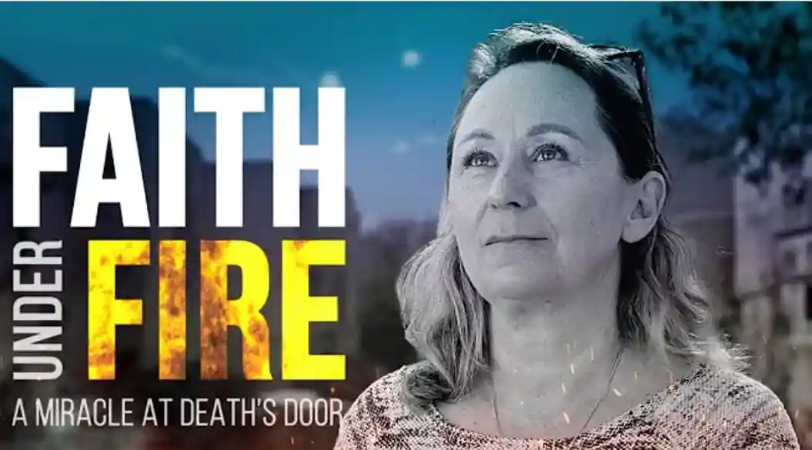

Historia o wierze i nadziei, w sytuacji beznadziejnej.
Historia Katyi i jej rodziny.
Wielu wierzących w Izraelu otzymało tego dnia, 7 października 2023, pilną prośbę modlitewną od rodziny uwięzionej w schronie, we własnym domu, przez terrorystów, którzy tam wtargnęli. Setki złączyło się w modlitwie za nich i Bóg odpowiedział nadprzyrodzonym wyzwoleniem. Lecz jak ta rodzina znalazła odwagę, by stanąć w obliczu terroru, tak przecież znanego mieszkańcom obszarów graniczących z Gazą? Jak oni znaleźli wiarę pośrodku ognia?

Katya opowiada:Dotarliśmy na to miejsce jako dwie rodziny nowych imigrantów. Zaczęliśmy uczyć się hebrajskiego. Tak nasze życie tutaj się zaczęło. Nauka i praca. To było bardzo trudne przyjść do takiego małego Kibbucu, w dodatku nie znając języka. Zaledwie dwa tygodnie po dotarciu na miejsce, pierwsze pociski moździerzowe zaczęły spadać na kibuc. To był początek Intifady. Czołgi i strzelanina. To Pierwszy szok, którego doznałam – nagle zrozumiałam, w jakim miejscu się znajduję. Pierwszym moim pytaniem do Boga było - „Dlaczego, dlaczego tu jestem?”
Wielu ludzi dzwoniło do nas - „Odejdźcie stamtąd, to jest bardzo niebezpieczne miejsce!” Ale mój mąż powiedział - „Nie, przyszliśmy tu i zostaniemy tu”. Dopiero po jakimś czasie zrozumiałam, że Bóg chce, żebyśmy tu byli. On wybrał dla nas takie miejsce, żebyśmy mieszkali na granicy z Gazą i byli jakby strażnikami granicy.
Pewnego dnia pocisk spadł obok jednego z domów. Rodzina z małymi dziećmi nie zdążyła się ukryć w schronie i małe dziecko zginęło. Po tym wydarzeniu wiele rodzin zdecydowało się opuścić kibuc. My również. „Panie, dosyć tego. Nie chcę tego już dalej ciągnąć” - powiedziałam. Zaczęliśmy szukać innego miejsca do zamieszkania. Jednak w tym samym czasie, wołałam do Boga - „proszę, nie pozwól mi popełnić błędu, nie pozwól mi podjąć decyzji pod wpływem strachu!” I wiem, że się naprawdę bałam.
I nagle Bóg uczynił ten wielki cud – przyprowadził do nas tak wielu ludzi, którzy nas odwiedzali codziennie. To dało nam nadzieje, to uzdrowiło nasze serca, dało nam radość do powrotu i siłę, by kontynuować.
7 Październik
Szósta rano. Podskakujemy w naszych łóżkach. Straszliwe dźwięki - co to jest?
Alarm! Alarm!
Alarm!
Bez przerwy. Bez przerwy.
Bum! Bum! Bum! Bum!
Mówię do męża - „Dima, zamknij okno!” „Czekaj!
Czekaj! Nie mogę wstać.” Po kilku minutach, kiedy się trochę uspokoiło – wyskakujemy z naszych łóżek,
zamykamy okno i biegniemy do drugiego schronu. Mamy dwa schrony po dwóch stronach w domu.
W tym momencie już słyszymy strzały karabinowe. „Co to za strzały?! Czy one są w kibucu? Czy z zewnątrz?” Wracamy do naszego pokoju i po kilku minutach zrozumieliśmy, że to jest infiltracja. To jest infiltracja nie tylko jednego lub dwóch, ale wielu terrorystów. W tym czasie wciąż jeszcze nie wiedzieliśmy, że było ich około 150.
Siadam, zaglądam do telefonu i rozumiem, że coś okropnego się dzieje. Nie tylko rakiety i bomby moździerzowe spadające na cały kraj – ale również inwazja terrorystów na całym obszarze graniczącym z Gazą.
Co robimy? Co jest pierwszą rzeczą, którą każdy wierzący powinien zrobić w takim wypadku? Wznosimy nasze ręce - „Abba, co się dzieje? Błogosław nas, błogosław nasz naród, błogosław naszą armie. Ty wiesz co się dzieje.” Proszę Boga, żeby ukrył nas, żeby zmylił terrorystów, tak, żeby nie mogli zrealizować swojego planu, żeby zniszczył ich plany. Wtedy Bóg dokonał czegoś wyjątkowego ze mną. Nagle czułam, że jestem na służbie w wojsku i teraz muszę wyłączyć wszystkie swoje emocje. „Muszę działać. Muszę być...być silna.” Otoczył mnie swoją obecnością.
Otwieram swoje powiadomienia i widzę niezliczoną ilość wiadomości od ludzi wołających o pomoc. Mówią, że terroryści próbują przeniknąć do domów. Strzelają na domy. Ludzie krzyczą o pomoc i wciąż pytają - „gdzie armia? Gdzie armia?!”
Otrzymuję wiadomość od mojego syna Daniego, który jest w okolicach Festivalu muzycznego Nova. Co robić? Jestem w służbie, więc wiem co robić. Posyłam tam aniołów - „proszę, aniołowie, idźcie tam i zabierzcie go w bezpieczne miejsce. Proszę, zakryjcie go, żeby był ukryty.” Po prostu nie czułam strachu. To był dla mnie absolutny cud.
Mój drugi syn w drugim schronie w naszym domu nie może przejść do nas, bo wszyscy się boimy opuścić pokoje schronowe. Terroryści przejęli nasz kibuc. Ludzie przysyłają mi wiadomości. Mówię im więc - „proszę, módlcie się. U nas są terroryści.” Dopiero kilka dni po tym wydarzenou, zorientowałam się, ilu ludzi otrzymało tą wiadomość. Duchowa Armia Pana, moja wielka rodzina tu, w tej ziemi i wszędzie na świecie – wstali i zaczęli walczyć. O jedenastej rano widzimy na kamerze... (mamy kamerę dla bezpieczeństwa, przez którą widzimy co się dzieje w domu)... „Wchodzą do środka.”
„Proszę módl się...terroryści są w naszym domu...” Mój syn, Yoni piszę z drugiego schronu - „mamo, co robimy?” Ja odpowiadam - „wszystko jest w porządku. Bóg jest z nami” „Proszę bądźcie ze mną w kontakcie.” Ja mówię - „wszystko jest OK. Oddychaj.”
Widzę tych terrorystów w kamerze i w pewien sposób czuję, jak zbliżają się do drzwi schronu. Przez moment miałam takie poczucie - „OK. Wejdą tu, włamią się przez drzwi i zastrzelą nas... i pójdziemy prosto do nieba.” Natomiast inna część mnie czuła - „jak to może być? Jesteś córką Bożą. Przez wszystkie te lata on mówił mi- zostaniesz tu. Bądź wierna i ja będę wierny.”
Wszystkie te obietnice, które dał przez swoje słowo, to co jest zapisane w Biblii – to nie są tylko słowa! To nie jest książka którą możeż przeczytać i zapomieć. Tą Księgę bierzemy, karmimy się nią i te słowa stają się ciałem. Czymś potężnym. Czymś co działa. Coś, co jest aktywne. Ogłaszam więc jego słowa. Wypowiadam wszystkie te rzeczy i czuję, że to działa.
Zbliżają się.
Słyszymy jak nadchodzą w stronę naszego pokoju.
Słyszymy ich.
Nie tkną
drzwi.
Oczekujemy, że oni zaczną... próbować otworzyć drzwi...cisza. Nic się nie dzieje.
Dokładnie pół godziny temu otrzymałam wiadomość od mojego sądiada - „próbują wejść do mojego pokoju schronowego!” Wiele innych ludzi również pisało że terroryści próbują wejść do ich schronu. Pokój schronowy tak naprawdę był pierwszym pomieszczeniem w domu, do którego się włamywali. Kładli ładunek wybuchowy i wysadzali drzwi.
Tak więc stoją tam w naszym domu, ale ani razu nie tkną drzwi schronu. Widzimy na kamerze, że idą w drugą
stronę. W stronę pokoju Yoniego. Piszę do Yoniego - „Idą do ciebie. Wszystko jest OK. Po prostu oddychaj.
Bóg jest z tobą. Nie ruszaj się. Nie rób niczego.”
„Mamo, co mam robić?! Czy powinienem...?”
„Nie rób
niczego.”
Zaczynają otwierać drzwi od różnych pokojów po drodzę, łazienki... wszystko. Dochodzą do drzwi Yoniego, przystawają...ale nie tkną drzwi. Co to jest?
Oni robili wrażenie, jakby ich w ogóle nie widzieli. Widzieli tam białą ściane, ale nie widzieli żadnych drzwi! Boża obecność była taka silna, strach Boży... Myślę, że po prostu kompletnie pochłonęła ich, tak, że nie powiodło im się. Nie udało im się nic zrobić. Byli w naszym domu, siedzieli nawet na kanapie, chodzili wokół, ale - tak jakby byli zdezorientowani. Kiedy opuścili nasz dom, zapomnieli nawet swoje kule. Cały ładunek kul. Zostawili je na naszym stole.
„Wow!”
Dopiero o 14:00 dotarli do nas pierwsi żołnierze. Weszli do naszego domu i nagle słyszymy hebrajskie słowa. Wow. Jaka to była wielka radość! Potrzebowaliśmy ich pomocy, żeby wydostać Yoniego ze schronu. Było trudno dla niego otworzyć drzwi. Tak bardzo się bał. Kiedy wreszcie otworzył je, po prostu pobiegł i przytulił mnie. Tak niesamowicie mocno się przytulaliśmy...
Później otworzyliśmy Facebooka i zobaczyliśmy, że dwoje naszych rodzin z kibucu... że terroryści uwięzili ich, zabrali ich telefony i robili livestream. Filmowali te rodziny. To były rodziny mieszkające tuż obok nas! Nie mogłam uwierzyć. To niemożliwe! Ale tak było. Później dowiedzieliśmy się, że cała rodzina została zamordowana. Kilka innych porwano.
O 21:00 lub 22:00 rozpoczęła się operacja ewakuacyjna wszystkich kibuców. To była bardzo trudna operacja. Ewakuowali ludzi ze swojich domów, dawając im kilka minut do zapakowania swoich najważniejszych rzeczy.
7 października czas się dla mnie zatrzymał. Od tego czasu nigdy nie wiem, która godzina, jaki dzień i jaki miesiąc mamy. Tak jakby wszystko się zatrzymało.